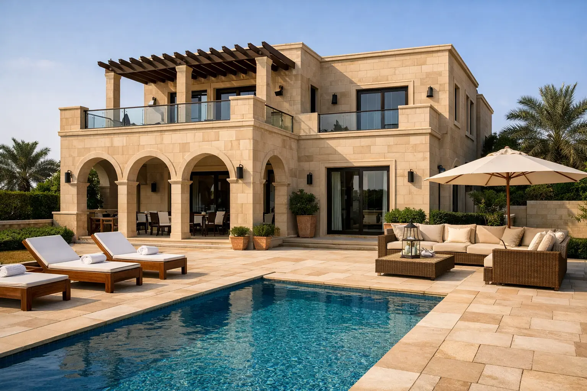
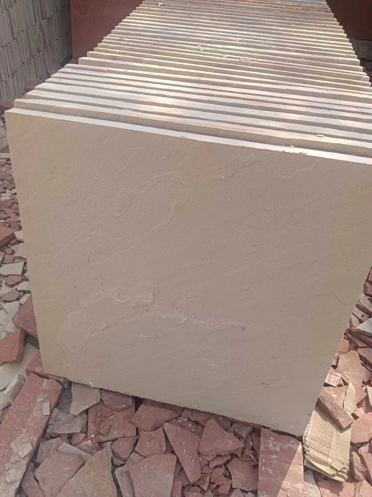
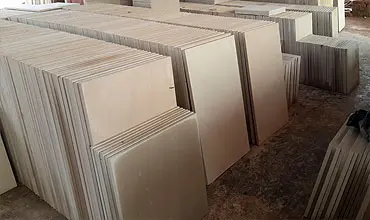
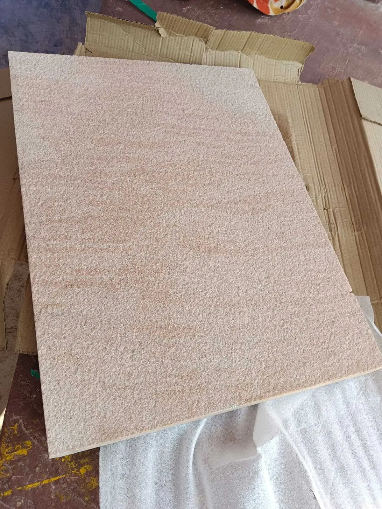
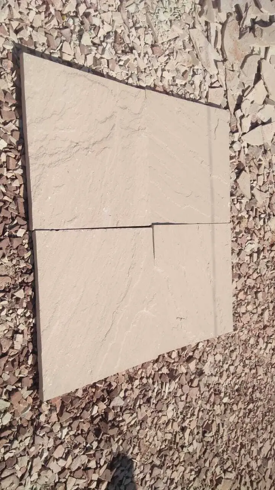

Architectural Sandstone from Rajasthan, India
Dholpur Beige Sandstone is a warm-toned natural stone extracted from the Dholpur region of Rajasthan, India. Known for its fine grain structure and balanced beige color, the material is widely used in architectural cladding, paving systems, landscape design, and institutional construction projects.
Its natural tone blends easily with both modern and heritage-style architecture while maintaining reliable durability in exterior environments. This makes Dholpur Beige suitable for residential, commercial, and public infrastructure developments across international markets.
ANAY Premium Stone supplies Dholpur Beige Sandstone for residential, commercial and infrastructure projects across international markets.
For typical architectural uses of sandstone in buildings and landscaping, please visit our Applications page.

Example of Dholpur Beige Sandstone used in architectural façade and outdoor paving.




Additional sizes and project-specific dimensions can be produced according to architectural requirements. For complete testing information including compressive strength, density and water absorption, please visit our Technical Specifications page.